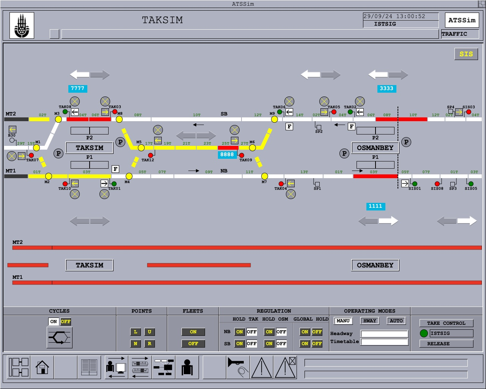

Simulation of the old ATS, SSI and SACEM systems of the Istanbul Metro
ATSSim simulates the old signalling system used in the Istanbul Metro's first line (now called M2) between the years of 2000-2009. The following subsystems powered the train operation in this period:
SSI (Solid State Interlocking) - Main Interlocking
ATS - Automatic Train Supervision (Dispatching System)
SACEM - Automatic Train Control (ATP and ATO) System
The simulation is written in JavaScript, is open source and can run on any web browser.
 Screenshot of the simulation